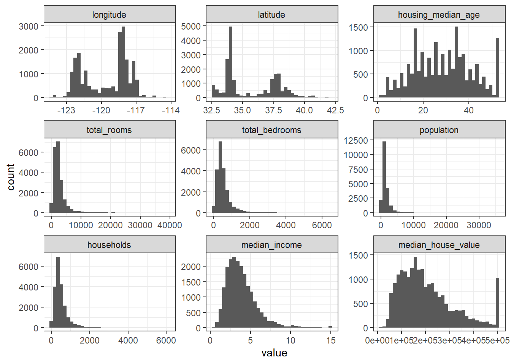
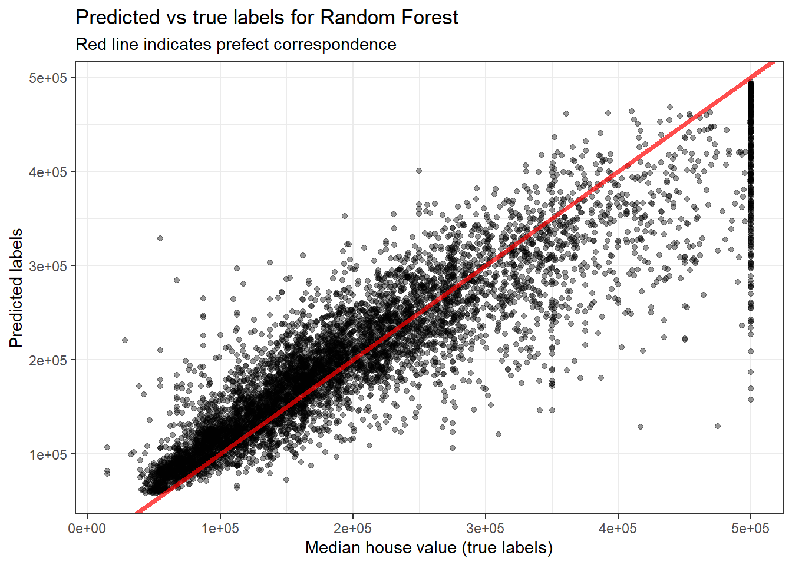

library(tidyverse)
library(tidymodels)
library(caret)
library(reshape2)California housing prices
Data import and first look
We import a dataset from https://github.com/ageron/handson-ml/tree/master/datasets/housing. It contains data from a 1990 census in California about housing. Each row describes a census block.
dataset <- read_csv("housing.csv")
glimpse(dataset)Rows: 20,640
Columns: 10
$ longitude <dbl> -122.23, -122.22, -122.24, -122.25, -122.25, -122.2…
$ latitude <dbl> 37.88, 37.86, 37.85, 37.85, 37.85, 37.85, 37.84, 37…
$ housing_median_age <dbl> 41, 21, 52, 52, 52, 52, 52, 52, 42, 52, 52, 52, 52,…
$ total_rooms <dbl> 880, 7099, 1467, 1274, 1627, 919, 2535, 3104, 2555,…
$ total_bedrooms <dbl> 129, 1106, 190, 235, 280, 213, 489, 687, 665, 707, …
$ population <dbl> 322, 2401, 496, 558, 565, 413, 1094, 1157, 1206, 15…
$ households <dbl> 126, 1138, 177, 219, 259, 193, 514, 647, 595, 714, …
$ median_income <dbl> 8.3252, 8.3014, 7.2574, 5.6431, 3.8462, 4.0368, 3.6…
$ median_house_value <dbl> 452600, 358500, 352100, 341300, 342200, 269700, 299…
$ ocean_proximity <chr> "NEAR BAY", "NEAR BAY", "NEAR BAY", "NEAR BAY", "NE…Columns’ names seem to be self-explanatory. Let’s take a look at the first rows
knitr::kable(head(dataset, 10), row.names = TRUE)| longitude | latitude | housing_median_age | total_rooms | total_bedrooms | population | households | median_income | median_house_value | ocean_proximity | |
|---|---|---|---|---|---|---|---|---|---|---|
| 1 | -122.23 | 37.88 | 41 | 880 | 129 | 322 | 126 | 8.3252 | 452600 | NEAR BAY |
| 2 | -122.22 | 37.86 | 21 | 7099 | 1106 | 2401 | 1138 | 8.3014 | 358500 | NEAR BAY |
| 3 | -122.24 | 37.85 | 52 | 1467 | 190 | 496 | 177 | 7.2574 | 352100 | NEAR BAY |
| 4 | -122.25 | 37.85 | 52 | 1274 | 235 | 558 | 219 | 5.6431 | 341300 | NEAR BAY |
| 5 | -122.25 | 37.85 | 52 | 1627 | 280 | 565 | 259 | 3.8462 | 342200 | NEAR BAY |
| 6 | -122.25 | 37.85 | 52 | 919 | 213 | 413 | 193 | 4.0368 | 269700 | NEAR BAY |
| 7 | -122.25 | 37.84 | 52 | 2535 | 489 | 1094 | 514 | 3.6591 | 299200 | NEAR BAY |
| 8 | -122.25 | 37.84 | 52 | 3104 | 687 | 1157 | 647 | 3.1200 | 241400 | NEAR BAY |
| 9 | -122.26 | 37.84 | 42 | 2555 | 665 | 1206 | 595 | 2.0804 | 226700 | NEAR BAY |
| 10 | -122.25 | 37.84 | 52 | 3549 | 707 | 1551 | 714 | 3.6912 | 261100 | NEAR BAY |
and a summary
summary(dataset) longitude latitude housing_median_age total_rooms
Min. :-124.3 Min. :32.54 Min. : 1.00 Min. : 2
1st Qu.:-121.8 1st Qu.:33.93 1st Qu.:18.00 1st Qu.: 1448
Median :-118.5 Median :34.26 Median :29.00 Median : 2127
Mean :-119.6 Mean :35.63 Mean :28.64 Mean : 2636
3rd Qu.:-118.0 3rd Qu.:37.71 3rd Qu.:37.00 3rd Qu.: 3148
Max. :-114.3 Max. :41.95 Max. :52.00 Max. :39320
total_bedrooms population households median_income
Min. : 1.0 Min. : 3 Min. : 1.0 Min. : 0.4999
1st Qu.: 296.0 1st Qu.: 787 1st Qu.: 280.0 1st Qu.: 2.5634
Median : 435.0 Median : 1166 Median : 409.0 Median : 3.5348
Mean : 537.9 Mean : 1425 Mean : 499.5 Mean : 3.8707
3rd Qu.: 647.0 3rd Qu.: 1725 3rd Qu.: 605.0 3rd Qu.: 4.7432
Max. :6445.0 Max. :35682 Max. :6082.0 Max. :15.0001
NA's :207
median_house_value ocean_proximity
Min. : 14999 Length:20640
1st Qu.:119600 Class :character
Median :179700 Mode :character
Mean :206856
3rd Qu.:264725
Max. :500001
Thus we have 9 numerical variables and 1 categorical variable.
Exploratory Data Analysis
Handling missing values
First, we look for missing values (alternatively, look at the summary):
dataset |>
summarise(
across(everything(), function(x) sum(is.na(x)))
) |>
pivot_longer(
cols = everything(),
names_to = "variable",
values_to = "missing_values"
)# A tibble: 10 × 2
variable missing_values
<chr> <int>
1 longitude 0
2 latitude 0
3 housing_median_age 0
4 total_rooms 0
5 total_bedrooms 207
6 population 0
7 households 0
8 median_income 0
9 median_house_value 0
10 ocean_proximity 0We want to address missing values of total_bedrooms by changing them into other values. We first look at the ratio between total_bedrooms and total_rooms
room_ratio <- dataset |>
mutate(
ratio = round(total_bedrooms / total_rooms, 2),
.keep = "used"
)
head(room_ratio, 10)# A tibble: 10 × 3
total_rooms total_bedrooms ratio
<dbl> <dbl> <dbl>
1 880 129 0.15
2 7099 1106 0.16
3 1467 190 0.13
4 1274 235 0.18
5 1627 280 0.17
6 919 213 0.23
7 2535 489 0.19
8 3104 687 0.22
9 2555 665 0.26
10 3549 707 0.2 Then we compute the mean and median of the ratio
ratio_mean <- mean(room_ratio$ratio, na.rm = TRUE)
ratio_median <- median(room_ratio$ratio, na.rm = TRUE)
paste("Mean:", round(ratio_mean, 3))[1] "Mean: 0.213"paste("Median:", round(ratio_median, 3))[1] "Median: 0.2"The two values are pretty similar, so it does not matter which one we use (here we choose the median). Now we can replace the missing values by multiplying the total_rooms by the median value 0.2
dataset_2 <- dataset
dataset_2$total_bedrooms[is.na(dataset_2$total_bedrooms)] <- round(dataset_2$total_rooms[is.na(dataset_2$total_bedrooms)]*ratio_median)We check if our code is correct
summary(dataset_2) longitude latitude housing_median_age total_rooms
Min. :-124.3 Min. :32.54 Min. : 1.00 Min. : 2
1st Qu.:-121.8 1st Qu.:33.93 1st Qu.:18.00 1st Qu.: 1448
Median :-118.5 Median :34.26 Median :29.00 Median : 2127
Mean :-119.6 Mean :35.63 Mean :28.64 Mean : 2636
3rd Qu.:-118.0 3rd Qu.:37.71 3rd Qu.:37.00 3rd Qu.: 3148
Max. :-114.3 Max. :41.95 Max. :52.00 Max. :39320
total_bedrooms population households median_income
Min. : 1.0 Min. : 3 Min. : 1.0 Min. : 0.4999
1st Qu.: 295.0 1st Qu.: 787 1st Qu.: 280.0 1st Qu.: 2.5634
Median : 435.0 Median : 1166 Median : 409.0 Median : 3.5348
Mean : 537.6 Mean : 1425 Mean : 499.5 Mean : 3.8707
3rd Qu.: 647.0 3rd Qu.: 1725 3rd Qu.: 605.0 3rd Qu.: 4.7432
Max. :6445.0 Max. :35682 Max. :6082.0 Max. :15.0001
median_house_value ocean_proximity
Min. : 14999 Length:20640
1st Qu.:119600 Class :character
Median :179700 Mode :character
Mean :206856
3rd Qu.:264725
Max. :500001 No more missing values! Note that here we have made a choice for replacing NA’s which is not guaranteed to be the best, but it seems quite reasonable.
Data glimpse
We have a better look at the data by plotting them into histograms
dataset_2 |>
melt(id = c("ocean_proximity")) |>
ggplot(aes(x = value)) +
geom_histogram(bins = 35) +
facet_wrap(~variable, scales = 'free') +
theme_bw()
Looking at the graphs, we see that the scales are very different from each others, so we will need to rescale them in order to use a machine learning method (not tree-based). Also, we see that both housing_median_age and median_house_value (the latter being our target variable) have an unusual amount of very high values. Maybe we have to cut out these outliers in order to have a good model…
Transform columns
We see that the majority of variables (when possible) take into account the median value of some quantity, except total_rooms and total_bedrooms. In order to have a more accurate representation of the data, it is better to transform them into ‘median-type’ data as well
dataset_2 <- dataset_2 |>
mutate(
median_rooms = round(total_rooms / households, 2),
median_bedrooms = round(total_bedrooms / households, 2),
.after = housing_median_age
) |>
select(!c(total_rooms, total_bedrooms))
dataset_2 |>
head(10) |>
knitr::kable(row.names = TRUE)| longitude | latitude | housing_median_age | median_rooms | median_bedrooms | population | households | median_income | median_house_value | ocean_proximity | |
|---|---|---|---|---|---|---|---|---|---|---|
| 1 | -122.23 | 37.88 | 41 | 6.98 | 1.02 | 322 | 126 | 8.3252 | 452600 | NEAR BAY |
| 2 | -122.22 | 37.86 | 21 | 6.24 | 0.97 | 2401 | 1138 | 8.3014 | 358500 | NEAR BAY |
| 3 | -122.24 | 37.85 | 52 | 8.29 | 1.07 | 496 | 177 | 7.2574 | 352100 | NEAR BAY |
| 4 | -122.25 | 37.85 | 52 | 5.82 | 1.07 | 558 | 219 | 5.6431 | 341300 | NEAR BAY |
| 5 | -122.25 | 37.85 | 52 | 6.28 | 1.08 | 565 | 259 | 3.8462 | 342200 | NEAR BAY |
| 6 | -122.25 | 37.85 | 52 | 4.76 | 1.10 | 413 | 193 | 4.0368 | 269700 | NEAR BAY |
| 7 | -122.25 | 37.84 | 52 | 4.93 | 0.95 | 1094 | 514 | 3.6591 | 299200 | NEAR BAY |
| 8 | -122.25 | 37.84 | 52 | 4.80 | 1.06 | 1157 | 647 | 3.1200 | 241400 | NEAR BAY |
| 9 | -122.26 | 37.84 | 42 | 4.29 | 1.12 | 1206 | 595 | 2.0804 | 226700 | NEAR BAY |
| 10 | -122.25 | 37.84 | 52 | 4.97 | 0.99 | 1551 | 714 | 3.6912 | 261100 | NEAR BAY |
Make dummy variables
Now we focus to the categorical variable:
categories <- dataset_2 |>
select(ocean_proximity) |>
unique()
categories# A tibble: 5 × 1
ocean_proximity
<chr>
1 NEAR BAY
2 <1H OCEAN
3 INLAND
4 NEAR OCEAN
5 ISLAND We want to transform our categorical variable into 5 boolean columns:
boolean_proximity <- dataset_2 |>
select(ocean_proximity) |>
rowid_to_column(var = "ID") |>
mutate(value = 1) |>
pivot_wider(
id_cols = ID,
names_from = ocean_proximity,
values_from = value,
values_fill = 0
) |>
select(-ID)
boolean_proximity |>
head(10) |>
knitr::kable(row.names = TRUE)| NEAR BAY | <1H OCEAN | INLAND | NEAR OCEAN | ISLAND | |
|---|---|---|---|---|---|
| 1 | 1 | 0 | 0 | 0 | 0 |
| 2 | 1 | 0 | 0 | 0 | 0 |
| 3 | 1 | 0 | 0 | 0 | 0 |
| 4 | 1 | 0 | 0 | 0 | 0 |
| 5 | 1 | 0 | 0 | 0 | 0 |
| 6 | 1 | 0 | 0 | 0 | 0 |
| 7 | 1 | 0 | 0 | 0 | 0 |
| 8 | 1 | 0 | 0 | 0 | 0 |
| 9 | 1 | 0 | 0 | 0 | 0 |
| 10 | 1 | 0 | 0 | 0 | 0 |
Before merging this table with our dataset, we need to normalize numerical values.
Normalize values
Let’s look back at the columns’ names
colnames(dataset_2) [1] "longitude" "latitude" "housing_median_age"
[4] "median_rooms" "median_bedrooms" "population"
[7] "households" "median_income" "median_house_value"
[10] "ocean_proximity" We want to normalize all the columns but ocean_proximity (because it is categorical) and median_house_value (target column)
dataset_normalized <- dataset_2 |>
select(
!c(ocean_proximity, median_house_value)
) |>
mutate(
across(
everything(),
function(x) (x - min(x))/(max(x)-min(x))),
.keep = "none"
)
dataset_normalized |>
head(10) |>
knitr::kable(row.names = TRUE)| longitude | latitude | housing_median_age | median_rooms | median_bedrooms | population | households | median_income | |
|---|---|---|---|---|---|---|---|---|
| 1 | 0.2111554 | 0.5674814 | 0.7843137 | 0.0434567 | 0.0204505 | 0.0089408 | 0.0205558 | 0.5396684 |
| 2 | 0.2121514 | 0.5653560 | 0.3921569 | 0.0382107 | 0.0189686 | 0.0672104 | 0.1869758 | 0.5380271 |
| 3 | 0.2101594 | 0.5642933 | 1.0000000 | 0.0527435 | 0.0219324 | 0.0138177 | 0.0289426 | 0.4660281 |
| 4 | 0.2091633 | 0.5642933 | 1.0000000 | 0.0352332 | 0.0219324 | 0.0155554 | 0.0358494 | 0.3546986 |
| 5 | 0.2091633 | 0.5642933 | 1.0000000 | 0.0384943 | 0.0222288 | 0.0157516 | 0.0424272 | 0.2307761 |
| 6 | 0.2091633 | 0.5642933 | 1.0000000 | 0.0277187 | 0.0228216 | 0.0114914 | 0.0315738 | 0.2439208 |
| 7 | 0.2091633 | 0.5632306 | 1.0000000 | 0.0289239 | 0.0183758 | 0.0305782 | 0.0843611 | 0.2178729 |
| 8 | 0.2091633 | 0.5632306 | 1.0000000 | 0.0280023 | 0.0216360 | 0.0323440 | 0.1062325 | 0.1806941 |
| 9 | 0.2081673 | 0.5632306 | 0.8039216 | 0.0243868 | 0.0234143 | 0.0337173 | 0.0976813 | 0.1089985 |
| 10 | 0.2091633 | 0.5632306 | 1.0000000 | 0.0292074 | 0.0195614 | 0.0433869 | 0.1172505 | 0.2200866 |
Now we can merge the two tables (and the median_house_value column)
dataset_3 <- bind_cols(
dataset_normalized,
boolean_proximity,
dataset_2$median_house_value
) |>
rename(median_house_value = ...14)
dataset_3 |>
head(10) |>
knitr::kable(row.names = TRUE)| longitude | latitude | housing_median_age | median_rooms | median_bedrooms | population | households | median_income | NEAR BAY | <1H OCEAN | INLAND | NEAR OCEAN | ISLAND | median_house_value | |
|---|---|---|---|---|---|---|---|---|---|---|---|---|---|---|
| 1 | 0.2111554 | 0.5674814 | 0.7843137 | 0.0434567 | 0.0204505 | 0.0089408 | 0.0205558 | 0.5396684 | 1 | 0 | 0 | 0 | 0 | 452600 |
| 2 | 0.2121514 | 0.5653560 | 0.3921569 | 0.0382107 | 0.0189686 | 0.0672104 | 0.1869758 | 0.5380271 | 1 | 0 | 0 | 0 | 0 | 358500 |
| 3 | 0.2101594 | 0.5642933 | 1.0000000 | 0.0527435 | 0.0219324 | 0.0138177 | 0.0289426 | 0.4660281 | 1 | 0 | 0 | 0 | 0 | 352100 |
| 4 | 0.2091633 | 0.5642933 | 1.0000000 | 0.0352332 | 0.0219324 | 0.0155554 | 0.0358494 | 0.3546986 | 1 | 0 | 0 | 0 | 0 | 341300 |
| 5 | 0.2091633 | 0.5642933 | 1.0000000 | 0.0384943 | 0.0222288 | 0.0157516 | 0.0424272 | 0.2307761 | 1 | 0 | 0 | 0 | 0 | 342200 |
| 6 | 0.2091633 | 0.5642933 | 1.0000000 | 0.0277187 | 0.0228216 | 0.0114914 | 0.0315738 | 0.2439208 | 1 | 0 | 0 | 0 | 0 | 269700 |
| 7 | 0.2091633 | 0.5632306 | 1.0000000 | 0.0289239 | 0.0183758 | 0.0305782 | 0.0843611 | 0.2178729 | 1 | 0 | 0 | 0 | 0 | 299200 |
| 8 | 0.2091633 | 0.5632306 | 1.0000000 | 0.0280023 | 0.0216360 | 0.0323440 | 0.1062325 | 0.1806941 | 1 | 0 | 0 | 0 | 0 | 241400 |
| 9 | 0.2081673 | 0.5632306 | 0.8039216 | 0.0243868 | 0.0234143 | 0.0337173 | 0.0976813 | 0.1089985 | 1 | 0 | 0 | 0 | 0 | 226700 |
| 10 | 0.2091633 | 0.5632306 | 1.0000000 | 0.0292074 | 0.0195614 | 0.0433869 | 0.1172505 | 0.2200866 | 1 | 0 | 0 | 0 | 0 | 261100 |
Predictive models
Now our dataset is ready for machine learning. Next step involves preprocessing data in order to prepare for fitting a model.
Split data
We split our dataset into a training and a test set
set.seed(42)
split_data <- initial_split(dataset_3, prop = 0.7)
train_set <- training(split_data)
test_set <- testing(split_data)
train_set |>
head(7) |>
knitr::kable(row.names = TRUE)| longitude | latitude | housing_median_age | median_rooms | median_bedrooms | population | households | median_income | NEAR BAY | <1H OCEAN | INLAND | NEAR OCEAN | ISLAND | median_house_value | |
|---|---|---|---|---|---|---|---|---|---|---|---|---|---|---|
| 1 | 0.1922311 | 0.8597237 | 0.4313725 | 0.0298455 | 0.0228216 | 0.0316433 | 0.0728499 | 0.0788265 | 0 | 0 | 1 | 0 | 0 | 80400 |
| 2 | 0.1832669 | 0.5866100 | 0.4509804 | 0.0297746 | 0.0207469 | 0.1445949 | 0.3089952 | 0.1775355 | 1 | 0 | 0 | 0 | 0 | 118800 |
| 3 | 0.2171315 | 0.7194474 | 0.6666667 | 0.0355168 | 0.0245999 | 0.0390145 | 0.0781122 | 0.1422463 | 0 | 0 | 1 | 0 | 0 | 62700 |
| 4 | 0.7061753 | 0.0573858 | 0.2156863 | 0.0442365 | 0.0240071 | 0.0547941 | 0.1175793 | 0.3372781 | 0 | 0 | 0 | 1 | 0 | 299600 |
| 5 | 0.5966135 | 0.1647184 | 0.6274510 | 0.0155962 | 0.0207469 | 0.0516270 | 0.1863180 | 0.1048675 | 0 | 1 | 0 | 0 | 0 | 243800 |
| 6 | 0.6484064 | 0.1434644 | 0.3529412 | 0.0388487 | 0.0189686 | 0.0500014 | 0.0919257 | 0.4333595 | 0 | 1 | 0 | 0 | 0 | 264300 |
| 7 | 0.6902390 | 0.1647184 | 0.5294118 | 0.0372891 | 0.0198577 | 0.0489644 | 0.0858411 | 0.2508655 | 0 | 0 | 1 | 0 | 0 | 128300 |
test_set |>
head(7) |>
knitr::kable(row.names = TRUE)| longitude | latitude | housing_median_age | median_rooms | median_bedrooms | population | households | median_income | NEAR BAY | <1H OCEAN | INLAND | NEAR OCEAN | ISLAND | median_house_value | |
|---|---|---|---|---|---|---|---|---|---|---|---|---|---|---|
| 1 | 0.2101594 | 0.5642933 | 1 | 0.0527435 | 0.0219324 | 0.0138177 | 0.0289426 | 0.4660281 | 1 | 0 | 0 | 0 | 0 | 352100 |
| 2 | 0.2091633 | 0.5642933 | 1 | 0.0384943 | 0.0222288 | 0.0157516 | 0.0424272 | 0.2307761 | 1 | 0 | 0 | 0 | 0 | 342200 |
| 3 | 0.2091633 | 0.5632306 | 1 | 0.0280023 | 0.0216360 | 0.0323440 | 0.1062325 | 0.1806941 | 1 | 0 | 0 | 0 | 0 | 241400 |
| 4 | 0.2081673 | 0.5642933 | 1 | 0.0328229 | 0.0222288 | 0.0254211 | 0.0659431 | 0.1864250 | 1 | 0 | 0 | 0 | 0 | 281500 |
| 5 | 0.2081673 | 0.5642933 | 1 | 0.0316886 | 0.0201541 | 0.0306903 | 0.0767966 | 0.1775907 | 1 | 0 | 0 | 0 | 0 | 213500 |
| 6 | 0.2081673 | 0.5632306 | 1 | 0.0223309 | 0.0228216 | 0.0095855 | 0.0284493 | 0.1499083 | 1 | 0 | 0 | 0 | 0 | 191300 |
| 7 | 0.2071713 | 0.5642933 | 1 | 0.0226854 | 0.0189686 | 0.0180779 | 0.0496629 | 0.1117433 | 1 | 0 | 0 | 0 | 0 | 155500 |
Random Forest
As a first model, we try to use a Random Forest. We start by initializing the model
rf_model <- rand_forest(
trees = 1000,
min_n = 5,
mode = "regression"
)and then training it
rf_fit <- rf_model |>
fit_xy(
x = train_set |> select(!median_house_value),
y = train_set |> select(median_house_value)
)
rf_fitparsnip model object
Ranger result
Call:
ranger::ranger(x = maybe_data_frame(x), y = y, num.trees = ~1000, min.node.size = min_rows(~5, x), num.threads = 1, verbose = FALSE, seed = sample.int(10^5, 1))
Type: Regression
Number of trees: 1000
Sample size: 14447
Number of independent variables: 13
Mtry: 3
Target node size: 5
Variable importance mode: none
Splitrule: variance
OOB prediction error (MSE): 2617894342
R squared (OOB): 0.8049159 At this point, we can make predictions and confront them with the true responses
true_vs_pred <- test_set |>
select(median_house_value) |>
bind_cols(predict(
rf_fit,
test_set |> select(!median_house_value)
)) |>
mutate(
difference = median_house_value - .pred
)
true_vs_pred |>
head(10) |>
knitr::kable(row.names = TRUE)| median_house_value | .pred | difference | |
|---|---|---|---|
| 1 | 352100 | 416302.6 | -64202.570 |
| 2 | 342200 | 252215.5 | 89984.548 |
| 3 | 241400 | 253299.1 | -11899.140 |
| 4 | 281500 | 223421.6 | 58078.399 |
| 5 | 213500 | 225706.0 | -12205.972 |
| 6 | 191300 | 172408.3 | 18891.741 |
| 7 | 155500 | 161151.7 | -5651.702 |
| 8 | 162900 | 168848.7 | -5948.749 |
| 9 | 147500 | 123850.7 | 23649.342 |
| 10 | 113900 | 153603.1 | -39703.053 |
Since the table cannot be read entirely, let’s plot true and predicted label in a scatterplot to see what happens
true_vs_pred |>
ggplot() +
geom_point(aes(x = median_house_value, y = .pred), alpha = 0.4) +
geom_abline(intercept = 0, slope = 1, color = 'red', lwd = 1.5, alpha = 0.7) +
labs(
x = "Median house value (true labels)",
y = "Predicted labels",
title = "Predicted vs true labels for Random Forest",
subtitle = "Red line indicates prefect correspondence"
) +
theme_bw()
As it can be expected, the model is far from perfect. We can see, for example, that the points with higher true-label value are more sparse, and in particular the group of 500,000$ houses is not predicted in a correct way by our model (look at the vertical black line on the right). The last fact may be explained by the presence of a large number of outliers in the dataset (we have already notice this in the ‘Data glimpse’ part).